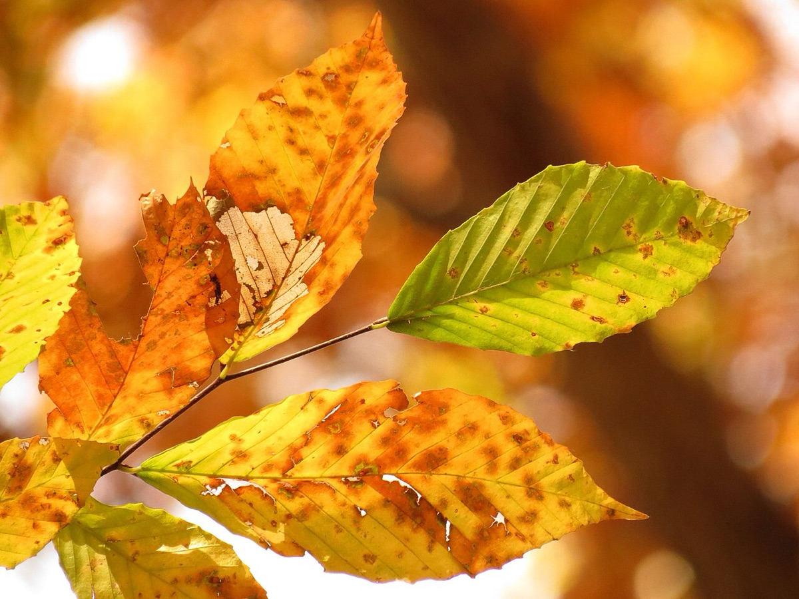
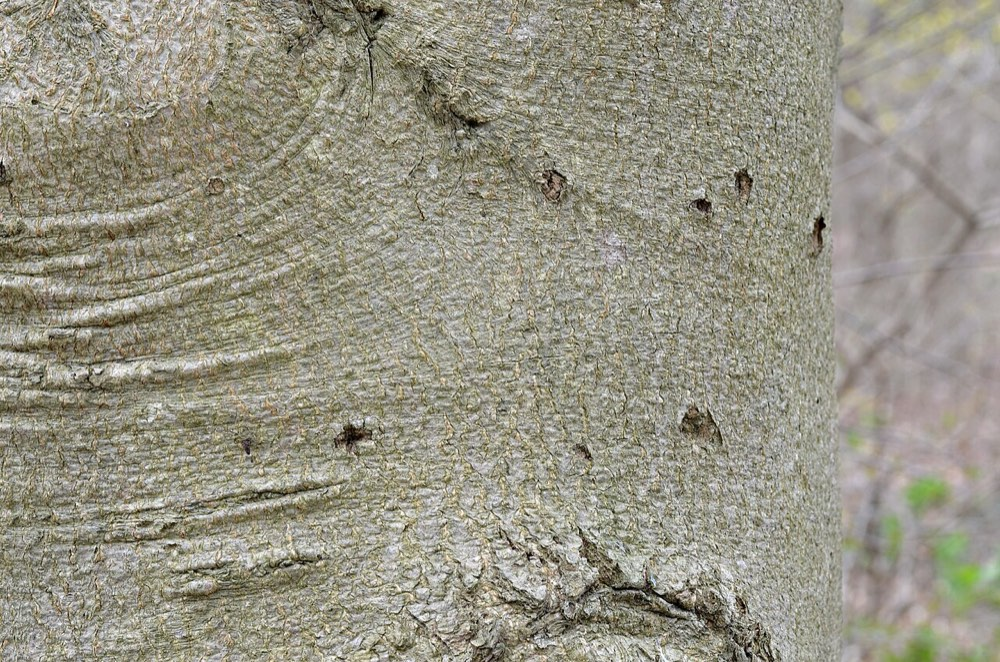
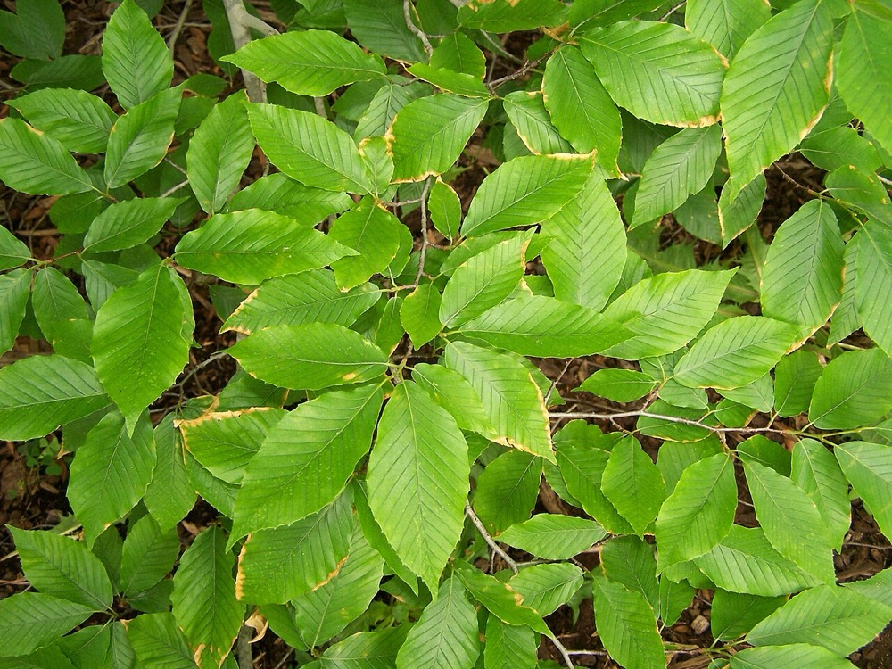

American Beech
Fagus grandifolia
- Also called
- Beech
- Kind
- tree · Fagaceae
- Native to Vermont
- yes
- Legal status
- Native; no special legal status found. Beech bark disease and beech leaf disease affect it; see Beech Leaf Disease. (checked 2026-10-30)
- Look-alikes
- European beech; Downy serviceberry; American chestnut; Sawtooth oak
Pictures



Names
American beech, Fagus grandifolia. The most common Vermont forest tree by stem count, according to the Vermont FPR beech leaf disease page (Beech Leaf Disease).
Range and habitat
Native. A medium to large tree up to 100 feet with a rounded crown; often forms thickets by root suckering, and old trees may be surrounded by a ring of young beech. Found in upland forest in Vermont; very shade tolerant (search summary of the landowner sheet).
How to identify (by season; look-alikes and the key difference)
- Leaves: alternate, simple, elliptical to oblong-ovate, 2 1/2 to 5 1/2 inches; 11 to 14 pairs of straight, parallel veins, each ending in a sharp distinct tooth; shiny green above.
- Bark: smooth, thin and gray, even on the largest trunks. (Beech bark disease can deform it.)
- Buds: long, slender and "cigar-shaped" in winter.
- Look-alikes: European beech, downy serviceberry, American chestnut and sawtooth oak. Young red maple bark is also smooth gray (see Red Maple).
By growth stage (trees: seedling, sapling, pole-size, mature or old; what to look at in each)
| Stage | What to look at | What you see |
|---|---|---|
| Small seedling | leaf edge, veins | Undulate edge, often without defined teeth; if teeth are present they sit where veins reach the margin. Veins typically pinnate, parallel and straight. Easy to lose among sugar maple seedlings and possible to confuse with small black cherry or sugar maple. A prominent beech bud develops as summer goes on. |
| Larger seedling | edge, veins | Edge toothed with large teeth where veins meet the margin; veins always parallel, straight and unbranched. Browsed stems regrow with oddly shaped leaves, but the veins still show. |
| Sapling and pole-size | bark, buds | Smooth gray bark (the factsheet does not describe young bark separately); slender zigzag twigs and long cigar-shaped buds. |
| Mature and old trees | bark, crown | Smooth thin gray bark even on the largest stems; rounded crown. |
| Winter, any age | twig, bud | Very slender, zigzag, light-brown twigs; buds about 3/4 inch long, light brown and slender, widely divergent. |
| Fruit (fall) | nuts | Triangular nuts in spiny husks. |
Through the year
Dates are typical for Vermont and shift with elevation and year; "approximate" means the source gave a season and the dates are a translation of it.
| When | What | Look for | What to do | Dates |
|---|---|---|---|---|
| Apr 25 to May 31 | flower (identify) | Spring flowers appear just after the leaves; male and female flowers are on the same tree. | - | approximate |
| Sep 15 to Oct 31 | mast (identify) | Edible, irregularly triangular nuts 1/2 to 3/4 inch long, in pairs in a spiny woody husk, maturing in fall; food for bear, deer, turkey, grouse and squirrels. | - | approximate |
| Nov 1 to Apr 15 | dormant (identify) | Smooth, thin gray bark; very slender zigzag light-brown twigs; long (about 3/4 inch) slender cigar-shaped buds that stand out from the twig; thickets of root sprouts around old trees. | - | approximate |
Signs on the land (tracks, scat, browse, nests, holes, calls)
Claw marks on the trunk and "bear nests" in the crowns show where black bears climb to feed (Black Bear).
Role in the forest (what it eats, what eats it, what it needs)
Beechnuts are a key fall food for bears, deer, turkeys and grouse (Black Bear, White-tailed Deer, Wild Turkey, Ruffed Grouse). The Landowner's Guide says beech and oak begin producing nuts at about age 50 and bear every 3 to 5 years for up to 150 years.
What helps it thrive (light, soil, shelter, food and the trees it uses)
- Light: a climax species that grows slowly under an overstory; seedlings grow best under a moderate canopy or in protected small openings, and beech grows faster in canopy openings and eventually ascends into the overstory (FEIS). Shelterwood cuts let beech develop with little competition from intolerant species; even-aged silviculture adversely affects beech and repeated clearcutting at short intervals may eliminate it.
- Soil and place: coarse-textured, dry to mesic soils in the northern part of its range; seldom on limestone soils; germination is poor on excessively wet sites; low elevations in the North, kept below 3,200 feet in the Adirondacks by cold and wind; more abundant on cooler, moister north slopes at mid latitudes.
- Seed and sprouts: begins to bear seed at about 40 years, with large crops by about 60, at intervals of 2 to 8 years; regenerates by root suckers and stump sprouts, and the spread of beech bark disease with overstory mortality is likely to increase root suckering.
- Mast trees (Vermont Landowner's Guide, chapter 9): most beechnuts come from dominant and co-dominant trees, and some trees are much more prolific than others; claw scars of bears on the bark and broken limbs pulled into feeding 'nests' mark the most prolific producers. Mast production begins when trees are about 10 inches across; decisions should focus on larger beech and on beech 6 to 10 inches across with potential for mast and for resistance to beech bark disease, and should be made in summer when crown condition shows vigor. If more than 10 percent of a stressed beech crown is yellow by midsummer the tree has an elevated risk of dying; if more than half is yellow or dead it has more than a 50 percent chance of dying within a few years. The Guide says the Agency of Natural Resources recommendations are not yet field-tested, and that harvesting beech in or near bear-feeding stands without them is worse than doing nothing.
- Who eats the nuts: mice, squirrels, chipmunks, black bear, deer, foxes, ruffed grouse, turkeys, ducks and blue jays (FEIS and Guide); beech is a poor deer browse (Black Bear, Beech Leaf Disease).
Managing for it (habitat practices) and living with it (conflicts and damage)
The Guide advises keeping healthy beech in a variety of age classes and removing trees with bark disease first. Beech leaf disease kills beech of all sizes (Beech Leaf Disease). A UVA plan records beech regeneration and how it affects the stand; in the Standards' example beech seedlings are increasing under the overstory.
Legal status
No special status found.
Sources
- Virginia Tech Dendrology, American beech: https://dendro.cnre.vt.edu/dendrology/syllabus/factsheet.cfm?ID=47 (read 2026-10-30)
- J. Robertson and J. Truong, A Guide to the Seedlings of New England (FEMC, 2021): https://www.uvm.edu/femc/attachments/project/999/seedling_guide-compressed_1.pdf
- Vermont Fish & Wildlife Department, A Landowner's Guide (deer and bear chapters)
- USDA Forest Service, Fire Effects Information System, Fagus grandifolia: https://research.fs.usda.gov/feis/species-reviews/faggra (read through a summarizing fetch 2026-11-01); Vermont Fish & Wildlife, A Landowner's Guide to wildlife habitat, chapter 9, Beech Mast Production Management (read as text 2026-11-01)
What this page is based on
Kind of source: mixed (Virginia Tech factsheet; New England seedling guide; the Vermont Landowner's Guide for mast)
What was read: Virginia Tech Dendrology factsheet (ID 47) for American beech, read through a summarizing fetch on 2026-10-30, the beech pages of A Guide to the Seedlings of New England (read as text) and the Vermont Fish & Wildlife Landowner's Guide (read as text; mast and bear chapters). The factsheet gives no young-bark description, no habitat and no fall color; 'dormant' windows translate 'winter'. Beech bark disease is described in a search summary of the landowner sheet, not read on the page. Habitat needs (light, soil, regeneration, response to cutting) added 2026-11-01 from the USDA Forest Service Fire Effects Information System species review (summarizing fetch); the review is national in scope and the Northeast details are those it names. The beech mast details are from chapter 9 of the Vermont Fish & Wildlife Landowner's Guide (read as text).
Last checked: 2026-10-30
Vermont land and forest reference, built 2026-11-01. Rules and dates here are summaries, not legal advice; dates shift with elevation and year. Photo and recording credits · Note: _reference/US-VT/Species/American Beech.md